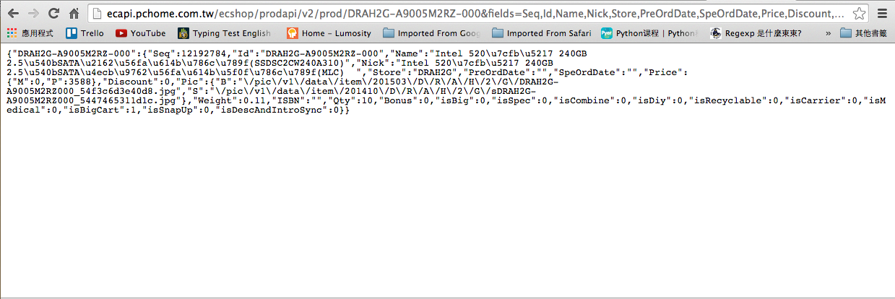

R Basic with Web Crawler
Week 1
Chia-Chi Chang, Yin-Chen Liao
Packages
Packages
為了使用這些套件，我們必須先安裝它們。
- 在 R 裡安裝套件也非常簡單
- 以接下來爬蟲例子中會需要的 XML 套件為例。
install.packages("XML")
##
## The downloaded binary packages are in
## /var/folders/5c/0p5zr2_n4xvbt2j6hkqczhph0000gn/T//Rtmpf9Hxhx/downloaded_packages
Packages
- 很好! 你已經成功安裝 XML 套件了。
- 為了把包含在 XML 這個套件中的相關函數"引入"供你差遣，我們需要 library() 這個函數。
library("XML")
## Warning: package 'XML' was built under R version 3.1.2
That's it! You are ready for building simple web-crawler now.
眼見為憑，我們用一個小例子示範一下。
Example: TWSE (臺灣證券交易所)
This way to TWSE
TWSE 英文首頁


The Code
MOPS_URL.TWSE_ALL <-
"http://www.twse.com.tw/en/listed/listed_company/apply_listing.php?page=1"
web_page = htmlParse(MOPS_URL.TWSE_ALL,encoding="big5")
data = readHTMLTable(web_page, which=6, stringsAsFactors=F, header = T)
names(data) <-
c("Application Date", "Code", "Company", "Chairman","Amount of Capital",
"Underwriter")
data <- data[-1,]
head(data, n=3)
## Application Date Code Company Chairman Amount of Capital Underwriter
## 2 2014.10.16 3416 WinMate 610,664
## 3 2014.10.07 8341 SF 1,000,000
## 4 2014.09.25 1558 ZENG HSING 605,526
Magic!
Your Turn!
- 平常上班不能上網亂看東西，今天可以!
- 找幾個有興趣的網站，並且把有興趣的資料在網站哪裡標註起來。
(print screen) - 你想抓的網站有可能是靜態網頁，也可能是動態的。(What!?)
- 別緊張，四週課程過去後，你會了解之間的差別，也會知道如何處理它。
- 記得把網址都記下來噢!等等會有用。
爬蟲心法
模仿你的瀏覽器
爬蟲心法：模仿你的瀏覽器
- 基本上來說，寫爬蟲就是寫程式去模仿瀏覽器的行為。
- 把你想要的資料從瀏覽器讀到的資料中取出來，就是一隻基本的爬蟲。
- 那到底瀏覽器讀到了什麼資料啊??
- Chrome 與 Firfox 是你的好朋友。
- IE 咧?
不要問....很可怕 = =+
爬蟲小幫手
GUI 小道具
爬蟲小幫手: GUI 小道具
- 開發人員工具 in Chrome & Firfox
- Mac: Cmd + Shift + I
- Linux: Ctrl + Shift + I

-
Postman (Chrome Plug-in)
- 簡單的圖形介面讓你可以對伺服器發 request。
- 不懂啥是 request? 沒關係，等等會解釋。
- 先偷看一下它長什麼樣子就好。

HTTP
What is HTTP?
- HTTP 是 "Hypertext Transfer Protocol" 的縮寫。
有說等於沒說....= =
- HTTP 是一種通訊協定，規定好客戶端 (client) 要如何跟伺服器端 (server) 做溝通。
- 簡而言之，HTTP 之於網路，就如同文法之於英文。
- 粗略來分，可以分為 POST、GET、PUT、DELETE ....等。
其中寫爬蟲最常用的，就是 GET 與 POST 這兩種方法。
- 更詳盡的資料可以參考 Wiki 上的說明。
GET METHOD
忙碌的瀏覽器
打從我們打開一個網頁開始，瀏覽器就沒有停止工作過。
我們先來看看瀏覽器做了些什麼事。
Chrome 開發人員工具
Network

滿坑滿谷的 GET 啊!
- 瀏覽器在我們打開這個網頁的時候，會幫我們下載了這個網頁所有需要的圖片、聲音與資料。
- 等檔案下載好後，再排版成我們肉眼看到的網頁。
- 瀏覽器 OS: 我把資料都藏在這裡了，想要的人就去拿吧!
- 在我們登上偉大的航道前，再多觀察一些其他的東西吧。
GET - More Than You Can Imagine
- URL (網址) 也可能包含了一些額外資訊，讓瀏覽器可以從 server 拿到不一樣的資料。
- 這些資訊可能包含 id 、當前頁數、日期等等資訊。
- 瀏覽一下 TWSE 的網站並觀察它網址的變化吧!
常見的 URL 形態：
- domain_name/path/to/specific/page
- ../../..?field1=value1&field2=value2&field3=value3
上述兩種 URL 再 TWSE 的網站上都找得到。
舉例來說，我們現在瀏覽的是英文界面，如果想瀏覽中文的呢? 它們的 URL 有什麼變化？
Try it!
What Can We "Get"?
常見的資料形態:
- HTML/XML text
- Files. (csv, tsv...etc)
- JSON
來看看它們長啥樣子吧!
瀏覽器之HTML
瀏覽器之HTML
- HTML 是 Hyper Text Markup Language 的縮寫。
- 以一個 tag 為基本單位，一般稱一個 tag 為一個 element 。
- 所謂的一個 tag ，指的是一組 <>...</>。 (有些 tag 只有一個 <>)
- 有樹狀結構。(DOM tree)
- 瀏覽器會根據下載到的 html 檔案去排版，成為人肉眼看到的網頁。
Example: DOM tree

DOM tree: The Code
<html>
<head>
<meta></meta>
<title></title>
<style type="text/css"></style>
</head>
<body>
<h1></h1>
<section></section>
<footer></footer>
</body>
</html>
Excersice:
- 用 Chrome 或 Firefox 的開發人員工具，把剛剛你找到的那些網頁的 html 檔案打開看看。
- 找看看你有興趣的資料在這些 html 檔案中的哪裡?
Files
JSON
以 PChome 網路商城為例

破解後台

以這個後台的 URL 來說，你可以猜到它代表的意義嗎?
想想看
- 什麼是 fields ?
- 'fields=' 後面的東西又是什麼?
- 如果我不想要商家的名字，要怎麼做呢?
在 Ajax 技術一章會有進一步的介紹。
GET Request by PostMan
用 PostMan 把這個 csv 下載下來!


Parsor for Files
The Basic Components of a WebSpider

R Code - Review
rm(list=ls())
MOPS_URL.TWSE_ALL <-
"http://www.twse.com.tw/en/listed/listed_company/apply_listing.php?page=1"
web_page = htmlParse(MOPS_URL.TWSE_ALL,encoding="big5")
data = readHTMLTable(web_page, which=6, stringsAsFactors=F, header = T)
names(data) <-
c("Application Date", "Code", "Company", "Chairman","Amount of Capital",
"Underwriter")
data <- data[-1,]
head(data, n=3)